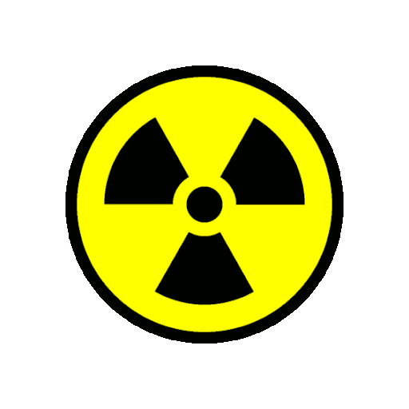
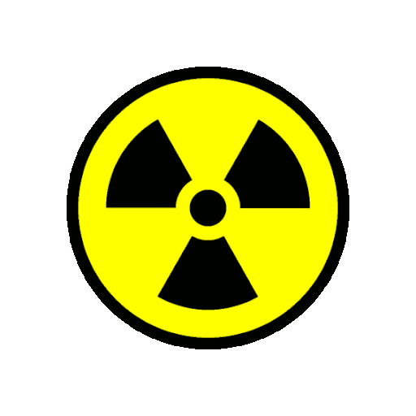
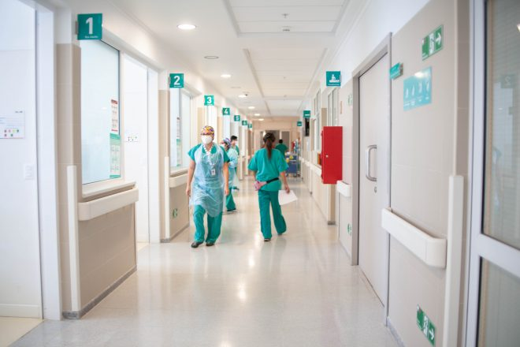
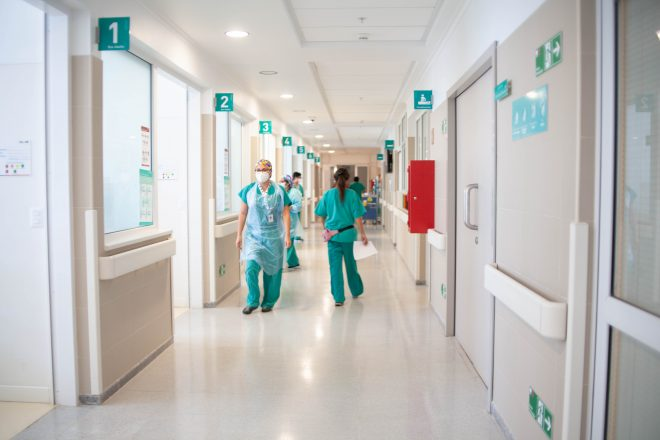

CASTELLUM HOSTIPAL

 


Información
Los fundadores del Hospital Centro Médico de Guatemala fueron los doctores José Fajardo, especializado en Medicina Interna; Bernardo del Valle en Cirugía General y Oncológica; Francisco Bauer, especializado en Cirugía, Ginecología y Obstetricia; Gerardo Alvarado especializado en Cardiología; Antonio Medrano en Urología y el Dr. Rodolfo Herrera Llerandi, especializado en Cirugía Toráxica.
CENTRO MEDICO 6A. AVENIDA 3-47 ZONA 10 PBX: (502) 2279-4949 info@centromedico.com.gt